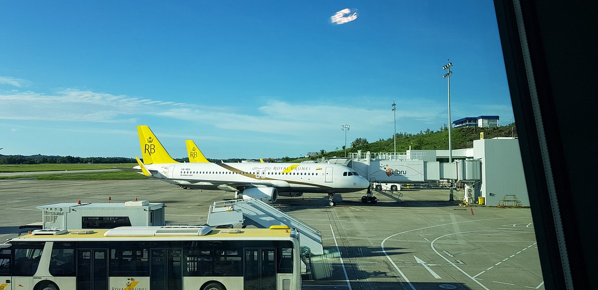

Getting to Brunei
Reaching Brunei is simple and convenient. Direct flights connect the capital, Bandar Seri Begawan, to major cities, while land and sea routes offer easy access from neighboring Southeast Asian countries. No matter how you choose to travel, Brunei's efficient entry points make it an accessible destination for everyone.
Learn More →